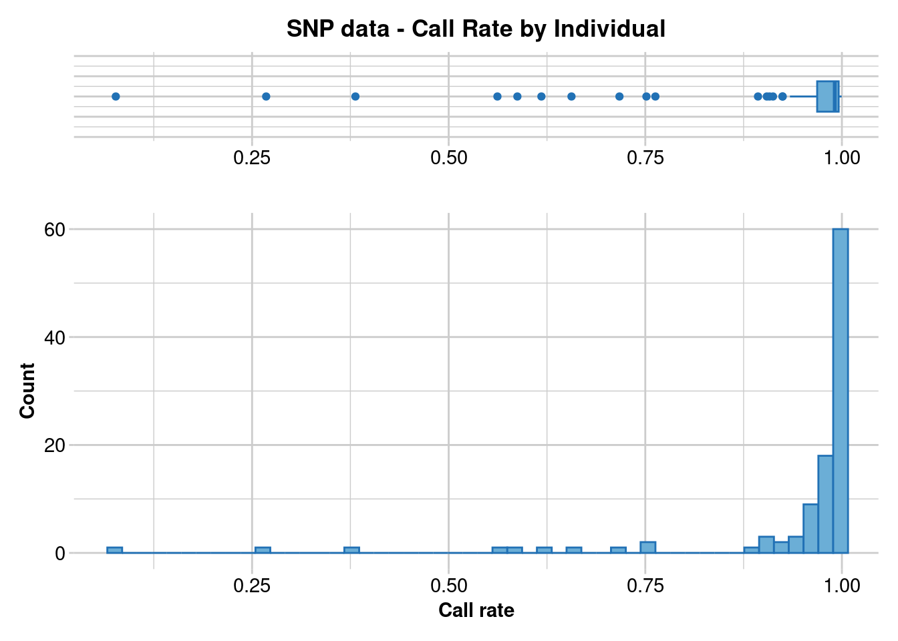
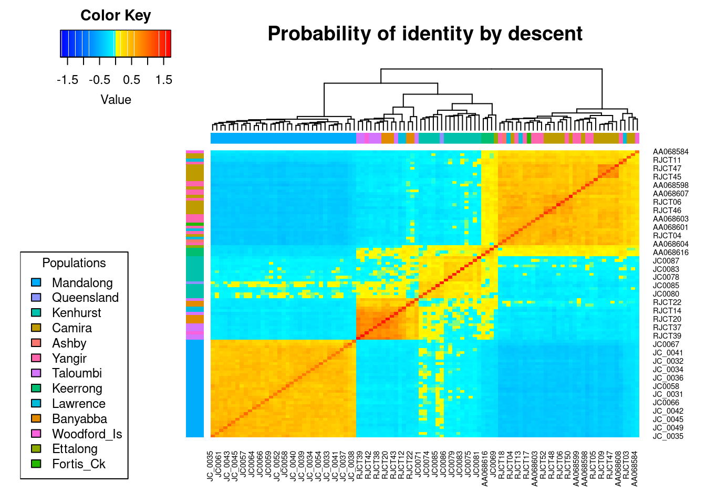
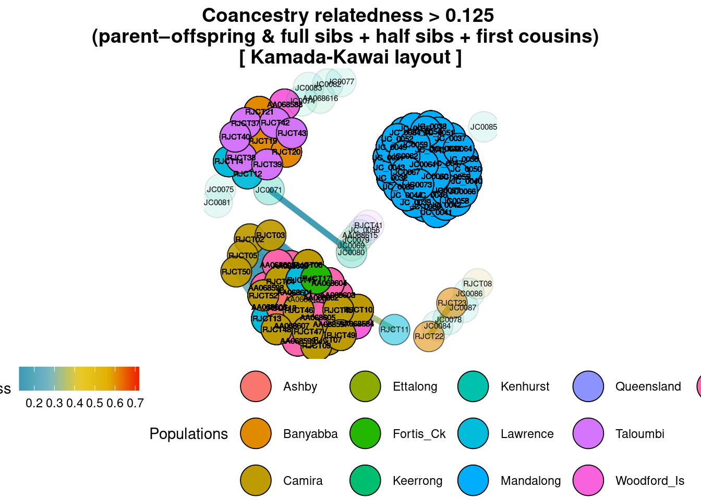
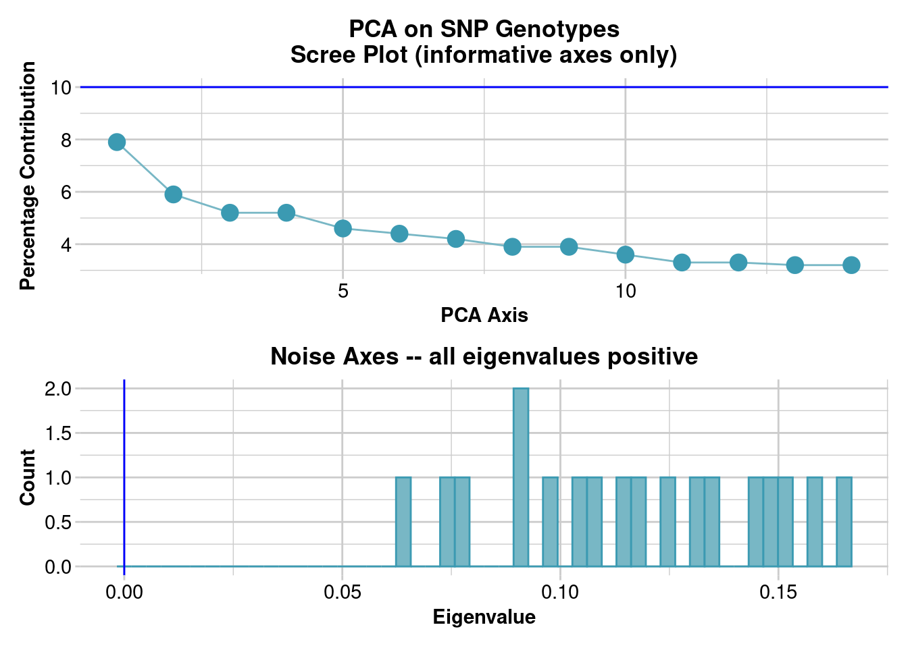
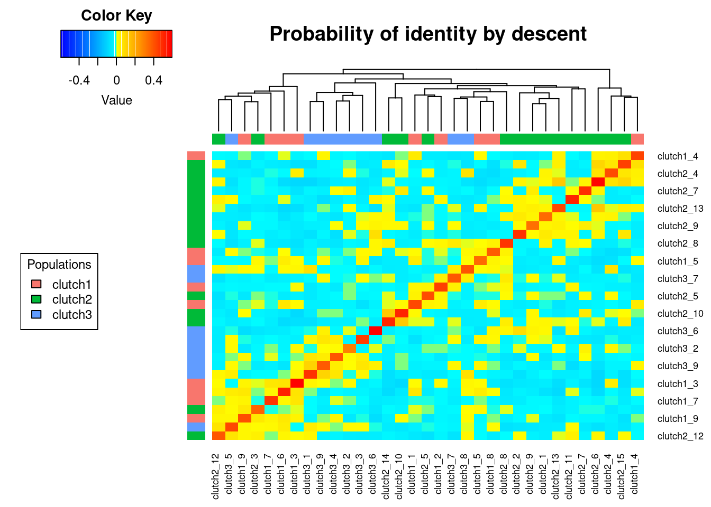
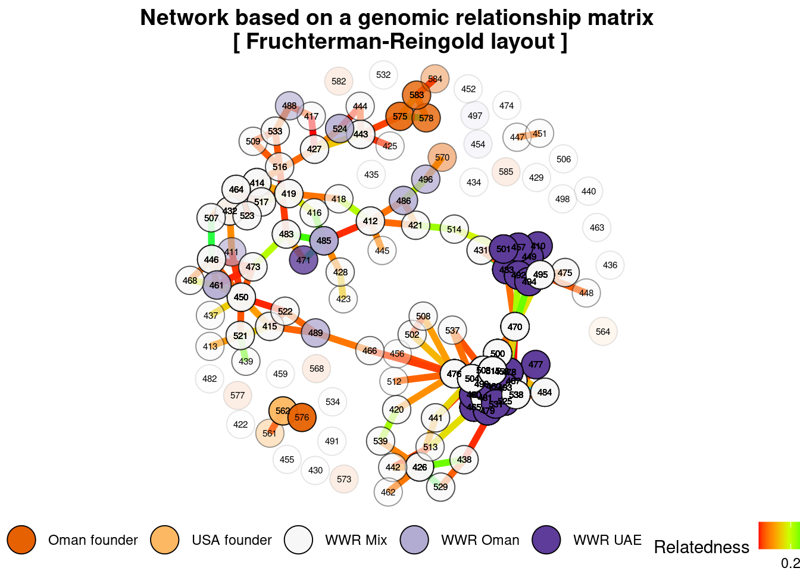

library(dartRverse)
library(related)
library(reshape2)
library(data.table)
library(stringr)
library(sequoia)
library(kinship2)
library(dartR.base)11 From Genes to Kin: Dissecting Relatedness & Kinship
Session Presenters
Required packages
make sure you have the packages installed, see Install dartRverse
Introduction
Two alleles are identical by descent (IBD) if they are identical copies of the same ancestral allele in a base population. Relatedness is the proportion of alleles shared between individuals that are IBD. Kinship is the probability that two alleles, one taken at random from each individual, are IBD (Wang 2022). Kinship considers half the genetic information because it looks at the probability that one individual inherits a particular allele from a common ancestor shared with another individual. Therefore, kinship is equal to half of relatedness.
Reletedness/kinship are not absolute states but are estimated relative to a reference population for which there is generally little information, so that we can estimate the kinship of a pair of individuals only relative to some other quantity.
Tip
Below is a table modified from Speed & Balding (2015) showing kinship values, and their confidence intervals (CI) for different relationships.
| Relationship | Kinship | CI(95%) |
|---|---|---|
| Identical twins/clones/same individual | 0.5 | - |
| Sibling/Parent-Offspring | 0.25 | (0.204, 0.296) |
| Half-sibling | 0.125 | (0.092, 0.158) |
| First cousin | 0.062 | (0.038, 0.089) |
| Half-cousin | 0.031 | (0.012, 0.055) |
| Second cousin | 0.016 | (0.004, 0.031) |
| Half-second cousin | 0.008 | (0.001, 0.020) |
| Third cousin | 0.004 | (0.000, 0.012) |
| Unrelated | 0 | - |
The Quest to Quash the Cane Toad Conundrum in Mandalong
Introduced to Australia in the 1930s to combat cane beetles, cane toads have since become a significant invasive threat, adapting to diverse habitats and reproducing prolifically. Lacking natural predators and possessing toxic secretions, they’ve harmed native wildlife and disrupted ecosystems across eastern and northern Australia.
The key issue here is figuring out if the young toads at Mandalong are locals, born and bred, or if they’ve crashed the party as a group from elsewhere.
Loading data
t1 <- gl.load("./data/cane_toad.rds")Starting gl.load
Processing genlight object with SNP data
Loaded object of type SNP from ./data/cane_toad.rds
Starting gl.compliance.check
Processing genlight object with SNP data
Checking coding of SNPs
SNP data scored NA, 0, 1 or 2 confirmed
Checking locus metrics and flags
Recalculating locus metrics
Checking for monomorphic loci
No monomorphic loci detected
Checking for loci with all missing data
No loci with all missing data detected
Checking whether individual names are unique.
Checking for individual metrics
Individual metrics confirmed
Checking for population assignments
Population assignments confirmed
Spelling of coordinates checked and changed if necessary to
lat/lon
Completed: gl.compliance.check
Completed: gl.load Finding duplicated samples
It is critical to identify and remove duplicated samples. To identify duplicated samples, we used the software Colony (Jones & Wang, 2010) and compare it with dartR function gl.report.replicates.
Tip
Ideally, in a large dataset with related and unrelated individuals and several replicated individuals, such as in a capture/mark/recapture study, the first histogram should have four “peaks”. The first peak should represent unrelated individuals, the second peak should correspond to second-degree relationships (such as cousins), the third peak should represent first-degree relationships (like parent/offspring and full siblings), and the fourth peak should represent replicated individuals.
In order to ensure that replicated individuals are properly identified, it’s important to have a clear separation between the third and fourth peaks in the second histogram. This means that there should be bins with zero counts between these two peaks
t1_dup <- t1
res_dup <- gl.report.replicates(t1_dup,perc_geno = 0.925)Starting gl.report.replicates
Processing genlight object with SNP dataCompleted: gl.report.replicates res_dup2 <- res_dup$table.rep
# Ordering pairwise estimates
res_dup2 <- res_dup2[order(res_dup2$perc,decreasing = TRUE),]
res_dup_2 <- res_dup$ind.list.rep
res_dup_2 <- lapply(res_dup_2,function(x){
paste(x,collapse = ", ")
})
res_dup_2 <- paste(names(res_dup_2),res_dup_2,sep = ", ")
res_dup_2 <- res_dup_2[order(res_dup_2)]
cat(res_dup_2,sep="\n")JC_0040, JC0068
JC_0048, JC_0053
JC0062, JC0063
JC0072, JC0073
JC0076, JC0077
RJCT10, RJCT51COLONY
We will use Diana Robledo’s function to convert a genlight object into COLONY format.
# loading gl2colony function from Diana Robledo
source("./functions/gl2colony.R")
Attaching package: 'crayon'The following object is masked from 'package:ggplot2':
%+%The following object is masked from 'package:adegenet':
chrt3 <- t1_dup
t3$other$ind.metrics$offspring <- "yes"
t3$other$ind.metrics$mother <- "no"
t3$other$ind.metrics$father <- "no"
t3$other$ind.metrics$id <- indNames(t3)
gl2colony(gl = t3,
filename_out = "colony",
probability_father = 0.5,
probability_mother = 0.5,
seed = NULL, # Seed for random number generator
update_allele_freq = 0, # 0/1=Not updating/updating allele frequency
di_mono_ecious = 2, # 2/1=Dioecious/Monoecious species
inbreed = 0, # 0/1=no inbreeding/inbreeding
haplodiploid = 0, # 0/1=Diploid species/HaploDiploid species
polygamy_male = 0, # 0/1=Polygamy/Monogamy for males
polygamy_female = 0, # 0/1=Polygamy/Monogamy for females
clone_inference = 1, # 0/1=Clone inference =No/Yes
scale_shibship = 1, # 0/1=Scale full sibship=No/Yes
sibship_prior = 0, # 0/1/2/3/4=No/Weak/Medium/Strong/Optimal sibship prior
known_allele_freq = 0, # 0/1=Unknown/Known population allele frequency
num_runs = 1, # Number of runs
length_run = 2, # 1/2/3/4=short/medium/long/very long run
monitor_method = 0, # 0/1=Monitor method by Iterate#/Time in second
monitor_interval = 10000, # Monitor interval in Iterate# / in seconds
windows_gui = 0, # 0/1=No/Yes for run with Windows GUI
likelihood = 0, # 0/1/2=PairLikelihood score/Fulllikelihood/FPLS
precision_fl = 2, # 0/1/2/3=Low/Medium/High/Very high precision with Full-likelihood
marker_id = 'mk@', # Marker Ids
marker_type = '0@', # Marker types, 0/1=Codominant/Dominant
allelic_dropout = '0.000@', # Allelic dropout rate at each locus
other_typ_err = '0.05@', # Other typing error rate at each locus
paternity_exclusion_threshold = '0 0',
maternity_exclusion_threshold = '0 0',
paternal_sibship = 0,
maternal_sibship = 0,
excluded_paternity = 0,
excluded_maternity = 0,
excluded_paternal_sibships = 0,
excluded_maternity_sibships = 0
)Random seed set to 42763112 Offspring detected.
0 Fathers detected.
0 Mothers detected.Missing paternal and maternal IDs: only sibship inference will be possible.Exporting Genlight object to COLONY2 format...(100%) COLONY2 file successfully exported!# Uncomment to run .
# system.time(system(paste(path.colony, "IFN:colony")))
# # user system elapsed
# # 181.102 1.893 183.162
# duplicates <- read.csv("./my_project.PairwiseCloneDyad")
# read the output
#duplicates <- read.csv("./data/my_project.PairwiseCloneDyad")
#duplicates
cat(res_dup_2,sep="\n")JC_0040, JC0068
JC_0048, JC_0053
JC0062, JC0063
JC0072, JC0073
JC0076, JC0077
RJCT10, RJCT51Filtering
Initially, it’s essential to ascertain the optimal approach for filtering, selecting between individual missingness and loci missingness. This decision is critical as individuals of lower quality can significantly impact loci that are otherwise deemed acceptable. Similarly, loci of subpar quality contribute to an increase in missing data among individuals who would otherwise meet our criteria. In our scenario, the priority is to retain individuals over loci. This prioritization is based on the premise that if the missing loci are uniformly distributed across all individuals, opting for individual-based filtering will not markedly influence the outcomes when compared to loci-based filtering.
Note
Previous studies showed that around 5,000 SNPs are sufficient to accurately estimate relatedness and kinship (Goudet et al., 2018).
#removing duplicates
t2 <- gl.drop.ind(t1,ind.list = res_dup$ind.list.drop)
# filtering on callrate by individual
gl.report.callrate(t2,method = "ind")
t2 <- gl.filter.callrate(t2,method = "ind", threshold = 0.5)# filtering monomorphs
t2 <- gl.filter.monomorphs(t2,verbose = 5)
# filtering on callrate by locus
t2 <- gl.filter.callrate(t2,method = "loc", threshold = 0.95,verbose = 5)# filtering on reproducibility
t2 <- gl.filter.reproducibility(t2,threshold = 0.99,verbose = 5)# filtering on read depth
t2 <- gl.filter.rdepth(t2,lower = 10, upper = max(t2$other$loc.metrics$rdepth),verbose = 5)# filtering on Minor Allele Count (MAC)
t2 <- gl.filter.maf(t2,threshold = 3,verbose = 5)
# filtering secondaries
t2 <- gl.filter.secondaries(t2,verbose = 5)
# filtering on Hardy Weinberg proportions
t2 <- gl.filter.hwe(t2,verbose = 5)
# assigning chromosome information
t2$chromosome <- t2$other$loc.metrics$Chrom_Rhinella_marina_v1
# assigning SNP position
t2$position <- t2$other$loc.metrics$ChromPosSnp_Rhinella_marina_v1
# report of linkage disequilibrium
ld_rep <- gl.report.ld.map(t2,verbose = 5)
# filtering on LD
# a threshold (R.squared = 0.2) is commonly used to imply that two loci are unlinked (Delourme et al., 2013; Li et al., 2014).
t2 <- gl.filter.ld(t2,ld.report = ld_rep, threshold = 0.2, verbose = 5)
# Uncomment to run.
# filtering on Hamming distance
# system.time(
# t2 <- gl.filter.hamming(t2)
# )
# user system elapsed
# 67.403 2.520 71.174 COANCESTRY
We first run COANCESTRY (Wang, 2011) using related package and Wang’s unbiased estimator (Wang, 2017).
# converting to related format
related <- gl2related(t2, save=FALSE)
# using Wang's unbiased estimator
res_coancestry <- coancestry(related, wang=1)
res_coancestry_2 <- res_coancestry$relatedness[,c(2,3,6)]
res_coancestry_3 <- cbind(res_coancestry_2$ind2.id,res_coancestry_2$ind1.id,res_coancestry_2$wang)
colnames(res_coancestry_3) <- colnames(res_coancestry_2)
res_coancestry_4 <- rbind(res_coancestry_2,res_coancestry_3)
res_coancestry_4$wang <- as.numeric(res_coancestry_4$wang)
mat_coan <- as.matrix(acast(res_coancestry_4, ind1.id~ind2.id, value.var="wang"))
mat_coan <- apply(mat_coan, 2, as.numeric)
rownames(mat_coan) <- colnames(mat_coan)
coan_col <- mat_coan
coan_col[upper.tri(coan_col)] <- NA
coan_col <- as.data.frame(as.table(as.matrix(coan_col)))
# dividing by two to get kinship
coan_col$Freq <- coan_col$Freq/2EMIBD9
Now let’s estimate kinship using new Wang’s method which uses a likelihood approach as implemented in the software EMIBD9 (Wang 2022).
# Uncomment to run
# system.time(EMIBD9 <- gl.run.EMIBD9(t2,emibd9.path = path.EMIBD9))
# user system elapsed
# 444.003 0.226 449.960
# saveRDS(EMIBD9,"EMIBD9.rds")
# read output
EMIBD9 <- readRDS("./data/EMIBD9.rds")
EMIBD9_col <- EMIBD9$rel
EMIBD9_col[upper.tri(EMIBD9_col)] <- NA
EMIBD9_col <- as.data.frame(as.table(as.matrix(EMIBD9_col)))GCTA
Relatedness estimation using a genetic relationship matrix (Lee et al., 2011) as implemented in the program GCTA (Yang et al., 2011).
# function to read the GRM binary file
ReadGRMBin <- function(prefix, AllN=FALSE, size=4){
sum_i <- function(i){
return(sum(1:i))
}
BinFileName <- paste(prefix,".grm.bin",sep="")
NFileName <- paste(prefix,".grm.N.bin",sep="")
IDFileName <- paste(prefix,".grm.id",sep="")
id <- read.table(IDFileName)
n <- dim(id)[1]
BinFile <- file(BinFileName, "rb");
grm <- readBin(BinFile, n =n*(n+1)/2, what=numeric(0), size=size)
NFile=file(NFileName, "rb");
if(AllN==TRUE){
N <- readBin(NFile, n = n * (n+1)/2, what=numeric(0), size=size)
}else{
N <- readBin(NFile, n=1, what=numeric(0), size=size)
}
i <- sapply(1:n, sum_i)
return(list(diag = grm[i], off = grm[-i], id = id, N = N))
}
# using dummy chromosome and position information
t2$chromosome <- as.factor(as.character("1"))
t2$position <- 1:nLoc(t2)
# converting to BED format using PLINK
gl2plink(t2,
bed.files = TRUE,
outpath = getwd(),
plink.bin.path = path.plink)
# running GCTA
system(paste(path.gcta,"--bfile gl_plink --make-grm-bin --out gcta_grm"))
# reading output
grm_GCTA <- ReadGRMBin("gcta_grm")
# formatting data
mat <- matrix(nrow = nrow(grm_GCTA$id),ncol = nrow(grm_GCTA$id) )
mat[upper.tri(mat, diag = FALSE)] <- grm_GCTA$off
mat[lower.tri(mat)] <- t(mat)[lower.tri(mat)]
diag(mat) <- grm_GCTA$diag
row.names(mat) <- grm_GCTA$id$V2
colnames(mat) <- grm_GCTA$id$V2
order_mat <- colnames(mat)[order(colnames(mat))]
mat <- mat[order_mat, order_mat]
GCTA_col <- mat
GCTA_col[upper.tri(GCTA_col)] <- NA
GCTA_col <- as.data.frame(as.table(as.matrix(GCTA_col)))
# dividing by two to get kinship
GCTA_col$Freq <- GCTA_col$Freq/2Genomic relationship matrix (GRM)
Relatedness estimation using an additive relationship matrix (Endelman & Jannink, 2012) as implemented in the R package rrBLUP (Endelman, 2011).
The GRM is an estimate of the proportion of alleles that two individuals have in common. It is generated by estimating the covariance of the genotypes between two individuals, i.e. how much genotypes in the two individuals correspond with each other. This covariance depends on the probability that alleles at a random locus are identical by state (IBS). Two alleles are IBS if they represent the same allele. Two alleles are identical by descent (IBD) if one is a physical copy of the other or if they are both physical copies of the same ancestral allele. Note that IBD is complicated to determine. IBD implies IBS, but not conversely. However, as the number of SNPs in a dataset increases, the mean probability of IBS approaches the mean probability of IBD.
GRM <- gl.grm(t2,palette_convergent = gl.colors(type="con"))
# formatting data
order_grm <- colnames(GRM)[order(colnames(GRM))]
GRM <- GRM[order_grm, order_grm]
GRM_col <- GRM
GRM_col[upper.tri(GRM_col)] <- NA
GRM_col <- as.data.frame(as.table(as.matrix(GRM_col)))
# dividing by two to get kinship
GRM_col$Freq <- GRM_col$Freq/2Plotting
#Sibling/Parent-Offspring
source("./functions/gl.grm.network_2.R")
mat_coan <- readRDS('./data/session11coancestry_mat_coan.rds')
grm_sib <- gl.grm.network_2(mat_coan, t2,
node.size = 10,
method_relatedness = "fr",
relatedness_factor = 0.5,
palette_discrete = gl.colors(type = "dis"),
method = "kk",
title="Coancestry relatedness > 0.5 \n(parent–offspring & full sibs)"
)# Half-sibling
grm_half_sib <- gl.grm.network_2(mat_coan, t2,
node.size = 10,
method_relatedness = "fr",
relatedness_factor = 0.25,
palette_discrete = gl.colors(type = "dis"),
method = "kk",
title="Coancestry relatedness > 0.25 \n(parent–offspring & full sibs + half sibs)")# First cousin
grm_first_cos <- gl.grm.network_2(mat_coan, t2,
node.size = 10,
method_relatedness = "fr",
relatedness_factor = 0.125,
palette_discrete = gl.colors(type = "dis"),
method = "kk",
title="Coancestry relatedness > 0.125 \n(parent–offspring & full sibs + half sibs + first cousins) ")
# TABLE
rel_cal <- cbind(coan_col,EMIBD9_col$Freq,GCTA_col$Freq,GRM_col$Freq)
rel_cal <- rel_cal[complete.cases(rel_cal$Freq),]
rel_cal <- rel_cal[order(rel_cal$Freq,decreasing = TRUE),]
colnames(rel_cal) <- c("ind1","ind2","Coancestry","EMIBD9","GCTA","rrBLUP")
rel_cal <- rel_cal[which(rel_cal$Coancestry >= 0.05 &
rel_cal$EMIBD9 >= 0.05 &
rel_cal$GCTA >= 0.05 &
rel_cal$rrBLUP >=0.05),]
rel_plot_2 <- melt(rel_cal, id.vars = c("ind1","ind2"))Box and violin plots showing the distribution of kinship values from four methods. Relatedness estimates from Coancestry, GCTA and rrBLUP methods were divided by two to obtain kinship estimates. Kinship values shown in the plot, were filtered such as the minimum kinship value in all the datasets was >0.05 for any pairwise relationship.
ggplot(rel_plot_2,aes(y=value,x=variable,color = variable,fill = variable)) +
geom_point(position=position_jitterdodge(dodge.width=1),show.legend = F) +
geom_violin(alpha=0.1,scale = "count")+
geom_boxplot(alpha=0.35)+
theme_bw(base_size = 16) +
theme( legend.position = "bottom",
axis.ticks.x=element_blank() ,
axis.text.x = element_blank(),
axis.title.x=element_blank(),
legend.title=element_blank(),
legend.text=element_text(size = 18),
legend.key.height=unit(1, "cm"))+
ylab("Kiship") Feathers of Laughter: Unveiling the Mysteries of the Amazonian Giggletuft (Hilaroplumis amazoniana)”

A new bird species has recently been identified in the Amazon region, characterized by its distinctive and intriguing appearance. Scientists are keen to explore the possibility of multiple paternity occurrences within clutches for this species. To delve into this question, the research team employs SNP data to conduct relatedness analyses. Egg samples have been collected from three separate clutches.
Understanding of mating dynamics of this species in the wild may help shape future management strategies, particularly in captive breeding programs. By adjusting ratios of males to females based on the mating system, we may be able to mimic wild matings as closely as possible.
# loading filtered file
new_bird <- readRDS("./data/new_bird.rds")
# PCA visualization.
pcoa_new_bird <- gl.pcoa(new_bird)
# you can zoom in or out and move in all directions. you can also
# unselect/select populations if you click in the labels of the populations in
# the legend of the plot.
gl.pcoa.plot(pcoa_new_bird, new_bird,zaxis = 3, pt.size = 4)
# a relatedness matrix.
new_bird_grm <- gl.grm(new_bird,palette_convergent = gl.colors(type="con"))
COANCESTRY
new_bird_related <- gl2related(new_bird)
# The mean relatedness for each clutch is calculated, with 1,000 bootstrap interactions performed to determine 95% confidence intervals.
res_coancestry <- coancestry(new_bird_related,wang=2,ci95.num.bootstrap = 1000)
res_coancestry_2 <- res_coancestry$relatedness[,c(2,3,6)]
ind_1 <- rbindlist(lapply(lapply(str_split(res_coancestry_2$ind1.id,pattern = "_"),t),as.data.frame))
ind_2 <- rbindlist(lapply(lapply(str_split(res_coancestry_2$ind2.id,pattern = "_"),t),as.data.frame))
analysis_coancestry <- cbind(ind_1,ind_2,res_coancestry_2$wang)
colnames(analysis_coancestry) <- c("clutch_1","ind_1","clutch_2","ind_2","relatedness")
analysis_coancestry$same_clutch <- analysis_coancestry$clutch_1 == analysis_coancestry$clutch_2
analysis_coancestry_2 <- analysis_coancestry[which(analysis_coancestry$same_clutch==T),]
analysis_coancestry_2$clutch_1 <- as.factor(analysis_coancestry_2$clutch_1)Plotting
All the individuals had a coefficient of relatedness within clutches greater than 0.25, with means within each clutch close to 0.50. We can therefore conclude that all individuals within each clutch were full siblings who share the same mother and father.
pal <- c("lightgoldenrod","darkturquoise","deeppink")
print(
ggplot(analysis_coancestry_2, aes(x=clutch_1 ,y = relatedness,group=clutch_1)) +
geom_violin(aes(fill=clutch_1)) +
geom_boxplot(aes(fill=clutch_1),alpha=0.5,position = position_dodge(width=0.8),show.legend = F, notch = FALSE)+
geom_point(aes(colour=clutch_1),position=position_jitterdodge(dodge.width=1),show.legend = F) +
scale_fill_manual(values = pal)+
theme_bw(base_size = 22) +
theme( legend.position = "bottom",
axis.ticks.x=element_blank() ,
axis.text.x = element_blank(),
axis.title.x=element_blank(),
legend.title=element_blank(),
legend.text=element_text(size = 18),
legend.key.height=unit(1.5, "cm"))
)From the Brink and Back: The Arabian Oryx’s Oman Odyssey
The Arabian oryx, once extinct in the wild by 1972, found a lifeline through global zoo and private collection breeding efforts. Thanks to “The World Herd” in the Phoenix Zoo and Saudi Arabian private reserves, these oryxes were reintroduced into the wild. Now, we’ve got about 1,000 roaming free and another 6,000-7,000 in captivity, marking a historic comeback from extinction to vulnerable status. Quite the turnaround for these majestic creatures in Oman!
 Timeline of the Arabian oryx reintroduction program in Oman and establishment of the “World Herd”. Top row displays the years when the animals were captured, translocated or released and the country where the event took place. Middle boxes show the major event and activity at that time. Bottom boxes show the number and sex of animals which had been used.
Timeline of the Arabian oryx reintroduction program in Oman and establishment of the “World Herd”. Top row displays the years when the animals were captured, translocated or released and the country where the event took place. Middle boxes show the major event and activity at that time. Bottom boxes show the number and sex of animals which had been used.
Load dataset and filtering
oryx_gl <- gl.load("./data/oryx.rds")
t1_dup <- oryx_gl
res_dup <- gl.report.replicates(t1_dup,perc_geno = 0.925)res_dup2 <- res_dup$table.rep
# Ordering pairwise estimates
res_dup2 <- res_dup2[order(res_dup2$perc,decreasing = TRUE),]
res_dup_2 <- res_dup$ind.list.rep
res_dup_2 <- lapply(res_dup_2,function(x){
paste(x,collapse = ", ")
})
res_dup_2 <- paste(names(res_dup_2),res_dup_2,sep = ", ")
res_dup_2 <- res_dup_2[order(res_dup_2)]
cat(res_dup_2,sep="\n")
#removing duplicates
oryx_gl <- gl.drop.ind(oryx_gl,ind.list = res_dup$ind.list.drop)GRM
Heatmap of the probabilities of identity by descent in the group formed by the herds of WWR-Oman and WWR-UAE. As described by Endelman & Jannink (68), each diagonal element has a mean that equals 1+f, where f is the inbreeding coefficient (i.e. the probability that the two alleles at a randomly chosen locus are IBD from the base population). As this probability lies between 0 and 1, the diagonal elements range from 1 to 2. Because the inbreeding coefficients are expressed relative to the current population, the mean of the off-diagonal elements is -(1+f)/n, where n is the number of loci. Yellow and red colours indicate those individuals that are more related to each other. The identification number of each individual is shown in the margins of the figure, where the last letter denotes whether the individual is male (M) or female (F).
oryx_related_matrix_all <- gl.grm(oryx_gl,palette_convergent = gl.colors(type="con"))gl.grm.network(oryx_related_matrix_all,
oryx_gl)
SEQUOIA
LifeHistData_2 <- as.data.frame(oryx_gl$ind.names)
LifeHistData_2$Sex <- as.character(oryx_gl$other$ind.metrics$Gender)
LifeHistData_2[LifeHistData_2=="Female"] <- 1
LifeHistData_2[LifeHistData_2=="Male"] <- 2
LifeHistData_2$Sex <- as.numeric(LifeHistData_2$Sex)
LifeHistData_2$BirthYear <- as.character(oryx_gl$other$ind.metrics$Age)
LifeHistData_2[LifeHistData_2=="Old"] <- 2000
LifeHistData_2[LifeHistData_2=="Adult"] <- 2005
LifeHistData_2[LifeHistData_2=="Juvenile"] <- 2010
LifeHistData_2[LifeHistData_2=="Calf"] <- 2015
LifeHistData_2$BirthYear <- as.numeric(LifeHistData_2$BirthYear)
colnames(LifeHistData_2)<- c("ID","Sex","BirthYear")
oryx_sequoia <- as.matrix(as.data.frame(oryx_gl))
oryx_sequoia[is.na(oryx_sequoia)] <- "-9"
oryx_sequoia_2 <- cbind(oryx_gl$ind.names,oryx_sequoia)
oryx_sequoia_2 <- mapply(oryx_sequoia_2, FUN=as.numeric)
oryx_sequoia_2 <- matrix(data=oryx_sequoia_2, ncol=ncol(oryx_sequoia)+1, nrow=nrow(oryx_sequoia))
oryx_sequoia_2 <- as.data.frame(oryx_sequoia_2)
GenoM <- GenoConvert(InFile=oryx_sequoia_2, InFormat="seq",Missing="-9",IDcol=1)
GenoM_2 <- GenoM
sequoia_res <- sequoia(GenoM = GenoM_2,
Plot = FALSE,
UseAge = FALSE,
MaxSibshipSize=20)
sequoia_res_2 <- GetMaybeRel(GenoM = GenoM_2,
LifeHistData =LifeHistData_2)
pedigree_res <- sequoia_res$Pedigree
pedigree_res$sex <- c(as.character(oryx_gl$other$ind.metrics$Gender),rep("Female",6),rep("Male",6))
family <- pedigree(id=pedigree_res$id, dadid=pedigree_res$sire, momid=pedigree_res$dam,sex=pedigree_res$sex)
plot(family)